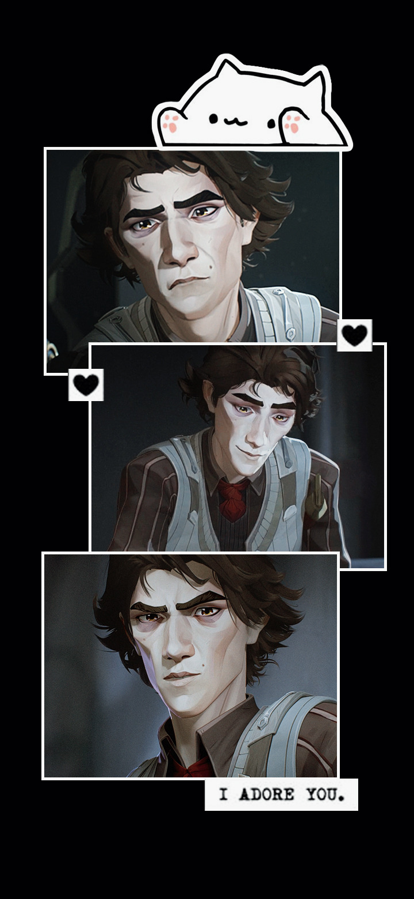
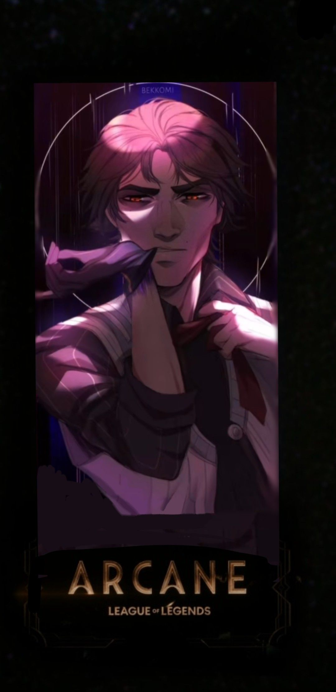
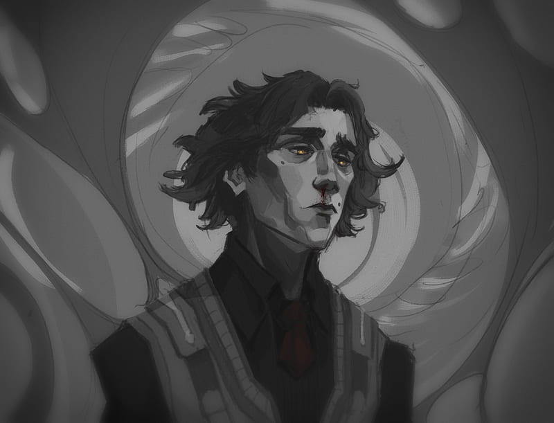

NO HACE FALTA MATEMATICOSCIENTIFICOS
SE NECESITA ALGUIEN QUE DISEÑE
Amor
Soy contigo el ocaso más vasto de mi cielo, y en él despunta mi alma como una estrella fría. Cuando de ti se alejan vuelven a mí mis pasos. Mi propio latigazo cae sobre mi vida.
Tecnologia
yo tengo un gran tructo cuando navego por internet; no comparto con los otros lo que solo mio es.
Mar
cuando el mar sea redondo y el sol deje de brillar ese será el día en que te pueda olvidar.
Galeria De Imagenes - Estudiante: Dzul Cortes
 Estudiante: Beatriz Dzul Cortes - INFO 406
Al ser fieles a la marca que representamos, elevamos la relación del público con ella. Como se convierte en amor se convierte en pasión. La pasión se convierte en defensa. Y vemos florecer la marca desde adentro, creando una historia completa que la audiencia abraza. Ahí es cuando la marca realmente puede flexionar sus músculos.
HOLA MUY BUEN DIA
ESTE ES UN PERSONAJE QUE SE LLAMA VIKTOR DE LA SERIE ARCANE :D